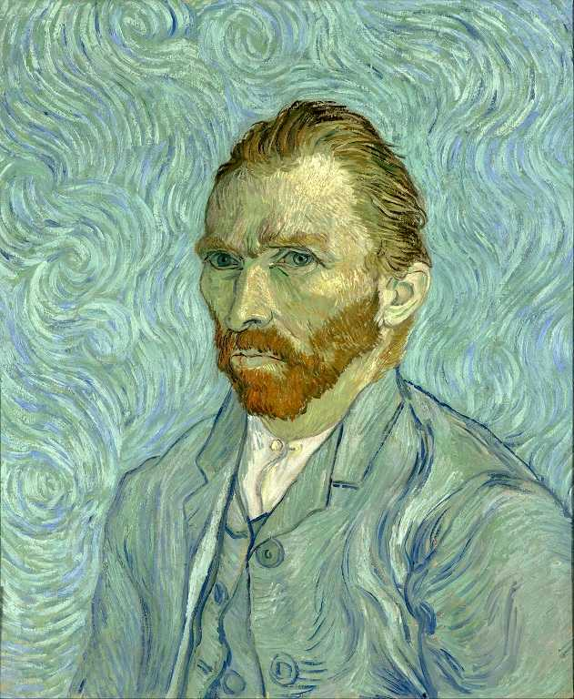
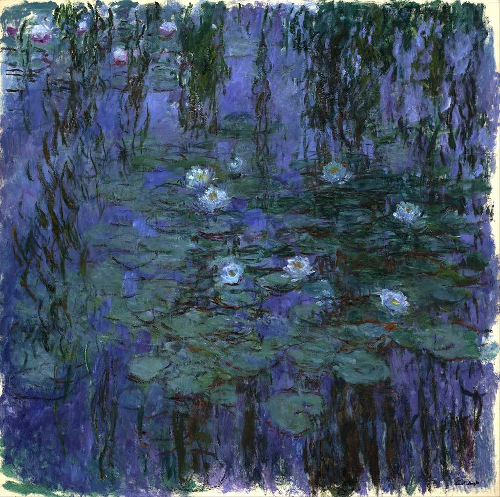
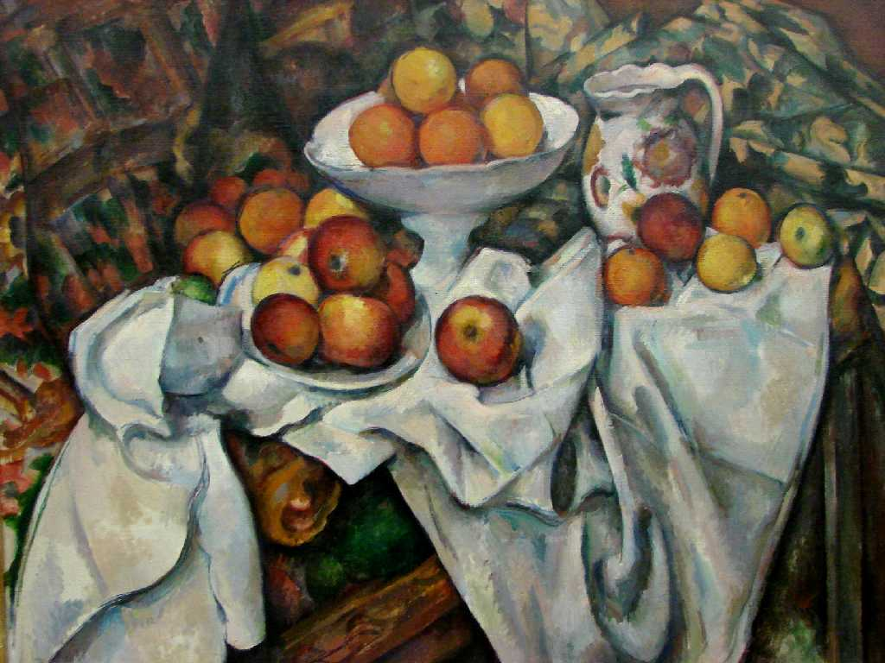
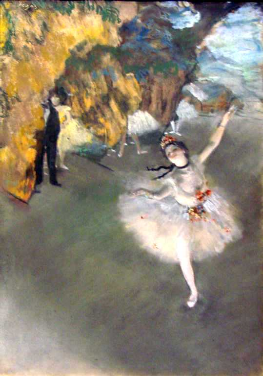
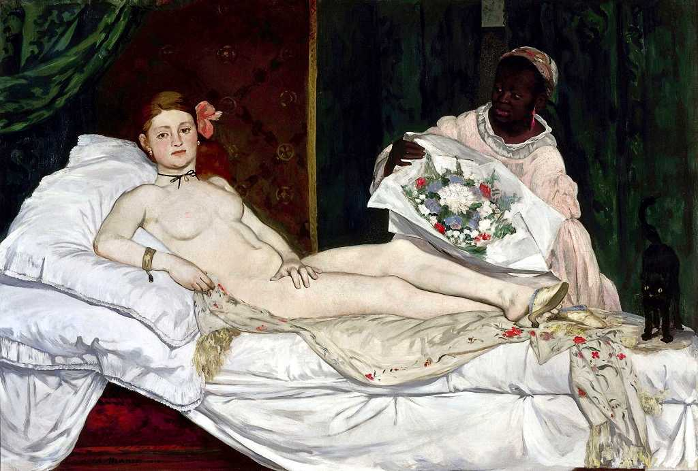
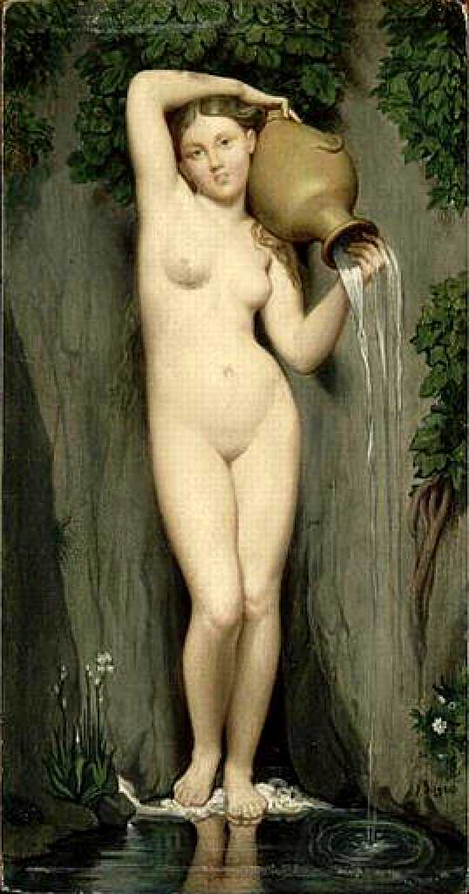
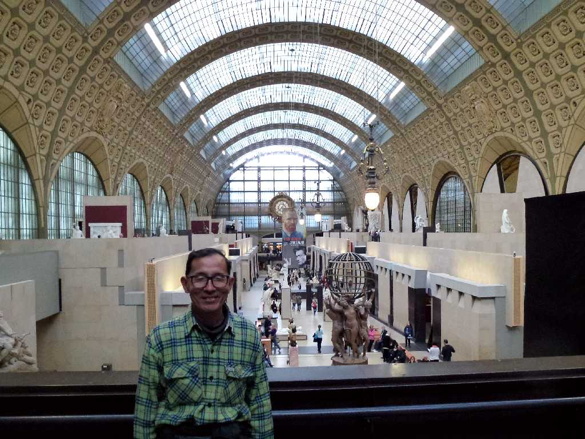

Gogh Self Portrait 1889
Millet The Gleaners 1857

Monet Blue Water Lilies 1919

Cézanne Nature morte aux pommes et aux oranges 1900

Renoir Bal du moulin de la Galette 1877

Degas Ballet 1878

Manet Olympia 1863

Ingres La Source 1860

March 26 2014 Orsay
モロッコ周遊の旅で帰国便のパリ乗り継ぎを利用し８０日間世界一周鉄道の旅以来８ヶ月ぶりにパリのゲストハウスに滞在して観光 １９７３年の学生時代に訪れたときは駅舎であったオルセイにルーブルで観た近代の美術品が移されていた